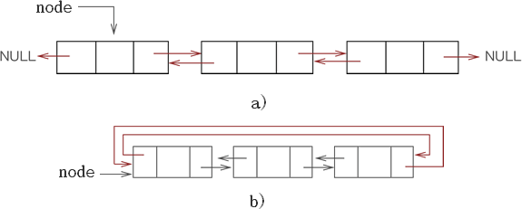
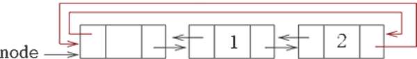
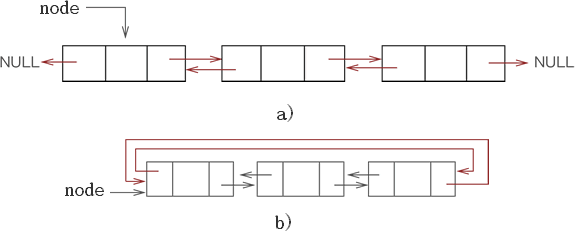
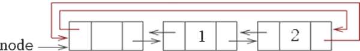

首页 > 编程笔记
C++ STL list容器底层实现（详解版）
前面在讲 STL list 容器时提到，该容器的底层是用双向链表实现的，甚至一些 STL 版本中（比如 SGI STL），list 容器的底层实现使用的是双向循环链表。

图 1 双向链表（ a) ）和双向循环链表（ b) ）
通过查看 list 容器的源码实现，其对节点的定义如下：
因此，list 容器迭代器的实现代码如下：
SGI STL 标准库中，list 容器的底层实现为双向循环链表，相比双向链表结构的好处是在构建 list 容器时，只需借助一个指针即可轻松表示 list 容器的首尾元素。
如下是 SGI STL 标准库中对 list 容器的定义：
除此之外，list 模板类中还提供有带参的构造函数，它们的实现过程大致分为以下 2 步：
由此可以总结出，list 容器实际上就是一个带有头节点的双向循环链表。如图 2 所示，此为存有 2 个元素的 list 容器：

图 1 list 容器底层存储示意图
在此基础上，通过借助 node 头节点，就可以实现 list 容器中的所有成员函数，比如：

图 1 双向链表（ a) ）和双向循环链表（ b) ）
如图 1 所示，使用链表存储数据，并不会将它们存储到一整块连续的内存空间中。恰恰相反，各元素占用的存储空间（又称为节点）是独立的、分散的，它们之间的线性关系通过指针（图 1 以箭头表示）来维持。图 1 中，node 表示链表的头指针。
list 容器节点结构
通过图 1 可以看到，双向链表的各个节点中存储的不仅仅是元素的值，还应包含 2 个指针，分别指向前一个元素和后一个元素。通过查看 list 容器的源码实现，其对节点的定义如下：
template<typename T,...>
struct __List_node{
//...
__list_node<T>* prev;
__list_node<T>* next;
T myval;
//...
}
可以看到，list 容器定义的每个节点中，都包含 *prev、*next 和 myval。其中，prev 指针用于指向前一个节点；next 指针用于指向后一个节点；myval 用于存储当前元素的值。注意，为了方便读者理解，此代码以及本节后续代码，都省略了和本节核心内容不相关的内容，如果读者对此部分感兴趣，可查看 list 容器实现源码。
list容器迭代器的底层实现
和 array、vector 这些容器迭代器的实现方式不同，由于 list 容器的元素并不是连续存储的，所以该容器迭代器中，必须包含一个可以指向 list 容器的指针，并且该指针还可以借助重载的 *、++、--、==、!= 等运算符，实现迭代器正确的递增、递减、取值等操作。因此，list 容器迭代器的实现代码如下：
template<tyepname T,...>
struct __list_iterator{
__list_node<T>* node;
//...
//重载 == 运算符
bool operator==(const __list_iterator& x){return node == x.node;}
//重载 != 运算符
bool operator!=(const __list_iterator& x){return node != x.node;}
//重载 * 运算符，返回引用类型
T* operator *() const {return *(node).myval;}
//重载前置 ++ 运算符
__list_iterator<T>& operator ++(){
node = (*node).next;
return *this;
}
//重载后置 ++ 运算符
__list_iterator<T>& operator ++(int){
__list_iterator<T> tmp = *this;
++(*this);
return tmp;
}
//重载前置 -- 运算符
__list_iterator<T>& operator--(){
node = (*node).prev;
return *this;
}
//重载后置 -- 运算符
__list_iterator<T> operator--(int){
__list_iterator<T> tmp = *this;
--(*this);
return tmp;
}
//...
}
可以看到，迭代器的移动就是通过操作节点的指针实现的。list容器的底层实现
本节开头提到，不同版本的 STL 标准库中，list 容器的底层实现并不完全一致，但原理基本相同。这里以 SGI STL 中的 list 容器为例，讲解该容器的具体实现过程。SGI STL 标准库中，list 容器的底层实现为双向循环链表，相比双向链表结构的好处是在构建 list 容器时，只需借助一个指针即可轻松表示 list 容器的首尾元素。
如下是 SGI STL 标准库中对 list 容器的定义：
template <class T,...>
class list
{
//...
//指向链表的头节点，并不存放数据
__list_node<T>* node;
//...以下还有list 容器的构造函数以及很多操作函数
}
另外，为了更方便的实现 list 模板类提供的函数，该模板类在构建容器时，会刻意在容器链表中添加一个空白节点，并作为 list 链表的首个节点（又称头节点）。
比如，我们经常构造空的 list 容器，其用到的构造函数如下所示：使用双向链表实现的 list 容器，其内部通常包含 2 个指针，并分别指向链表中头部的空白节点和尾部的空白节点（也就是说，其包含 2 个空白节点）。
list() { empty_initialize(); }
// 用于空链表的建立
void empty_initialize()
{
node = get_node();//初始化节点
node->next = node; // 前置节点指向自己
node->prev = node; // 后置节点指向自己
}
显然，即便是创建空的 list 容器，它也包含有 1 个节点。除此之外，list 模板类中还提供有带参的构造函数，它们的实现过程大致分为以下 2 步：
- 调用 empty_initialize() 函数，构造带有头节点的空 list 容器链表；
- 将各个参数按照次序插入到空的 list 容器链表中。
由此可以总结出，list 容器实际上就是一个带有头节点的双向循环链表。如图 2 所示，此为存有 2 个元素的 list 容器：

图 1 list 容器底层存储示意图
在此基础上，通过借助 node 头节点，就可以实现 list 容器中的所有成员函数，比如：
//begin()成员函数
__list_iterator<T> begin(){return (*node).next;}
//end()成员函数
__list_iterator<T> end(){return node;}
//empty()成员函数
bool empty() const{return (*node).next == node;}
//front()成员函数
T& front() {return *begin();}
//back()成员函数
T& back() {return *(--end();)}
//...
以上也只是罗列了 list 容器中一部分成员函数的实现方法，其它成员函数的具体实现，这里不再具体描述，感兴趣的读者，可下载 list 容器的实现源码。
关注公众号「站长严长生」，在手机上阅读所有教程，随时随地都能学习。内含一款搜索神器，免费下载全网书籍和视频。

微信扫码关注公众号